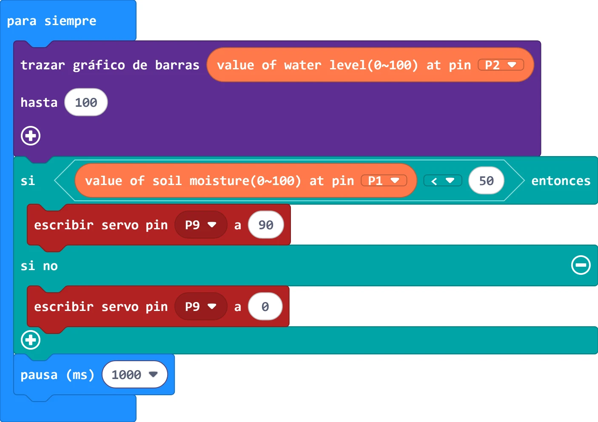

Inicio › Talleres › Kits y robots
Smart Agriculture Kit: riego automático
El Smart Agriculture Kit de ELECFREAKS incluye la placa de expansión IoT:bit y sensores para proyectos de agricultura. Montamos un riego automático: si la tierra está seca, un servo abre la válvula; el nivel del depósito se muestra en la pantalla.
Necesitas
- Smart Agriculture Kit (IoT:bit, sensor de humedad del suelo, sensor de nivel de agua, servo 180°)
- micro:bit
- Maceta y un depósito de agua
Conexiones
- 1Sensor de humedad del sueloPuerto P1 de la IoT:bit.
- 2Sensor de nivel de aguaPuerto P2.
- 3Servo (válvula)Puerto P9.
- 4IoT:bit con la micro:bitPlaca de expansión del kit.
| Componente | Puerto de la IoT:bit |
|---|---|
| Sensor de humedad del suelo | P1 |
| Sensor de nivel de agua | P2 |
| Servo | P9 |
Paso a paso
- Conecta los sensores y el servo como en la tabla (igual que el caso 1 de la guía del kit).
- Añade la extensión iot-environment-kit.
- Muestra el nivel del depósito con un gráfico de barras.
- Si la humedad del suelo baja de 50, gira el servo para regar; si no, ciérralo.
Más casos del kit
La guía del kit propone 13 casos: control de temperatura y humedad del invernadero (DHT11 y pantalla OLED), luz artificial con LED de colores, protección de cultivos con sensor PIR, temperatura del agua (DS18B20), nivel de un estanque, comedero automático y una granja inteligente completa.
Programa
Antes de empezar añade la extensión Octopus (iot-environment-kit) (busca iot-environment-kit): Extensiones (al final de la lista de categorías) y escribe el nombre en el buscador.

Ver y copiar el código JavaScript
basic.forever(function () {
led.plotBarGraph(Environment.ReadWaterLevel(AnalogPin.P2), 100)
if (Environment.ReadSoilHumidity(AnalogPin.P1) < 50) {
pins.servoWritePin(AnalogPin.P9, 90)
} else {
pins.servoWritePin(AnalogPin.P9, 0)
}
basic.pause(1000)
})En MakeCode abre la pestaña JavaScript, borra lo que haya, pega el código y vuelve a Bloques.
¿Y si…?
- Añade la pantalla OLED para mostrar los valores.
- Programa un riego por horario además de por humedad.
Para el profesorado
Basado en el caso 1 del wiki de ELECFREAKS (humedad en P1, nivel en P2, servo en P9) y en las funciones de la extensión oficial pxt-iot-environment-kit, que dan valores de 0 a 100. El umbral de 50 es orientativo: calibradlo con vuestra tierra.